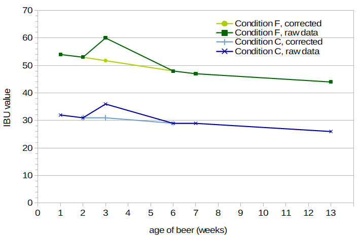
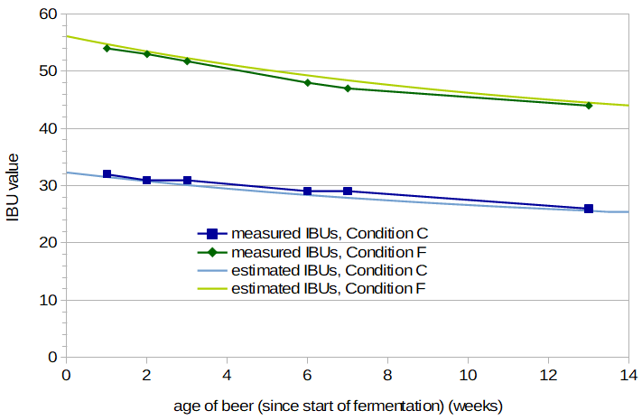
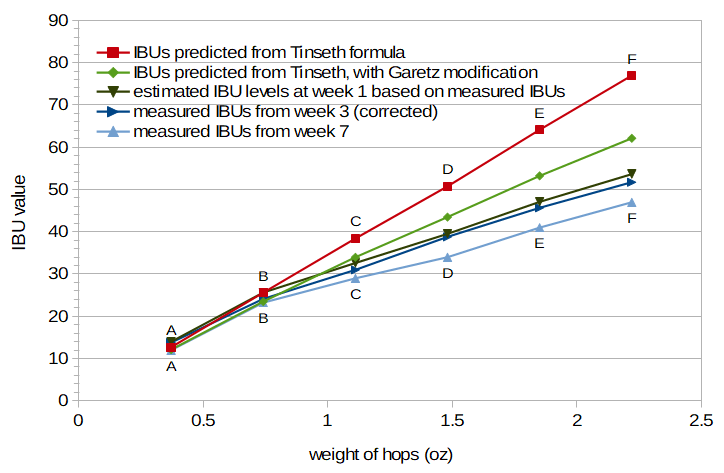
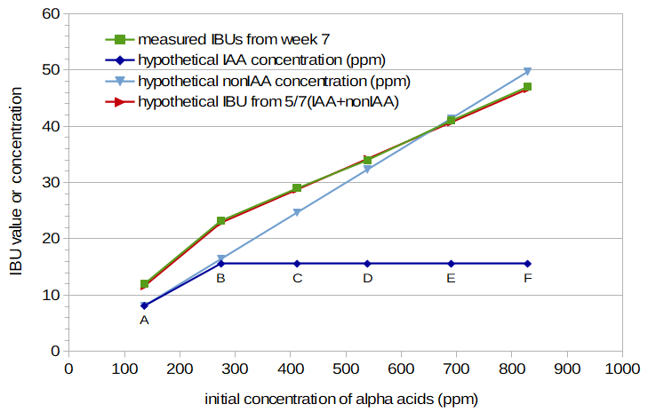
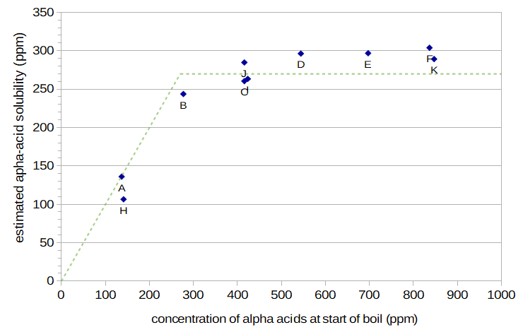

Abstract
This post summarizes a series of experiments I conducted in order to explore factors that might affect alpha-acid utilization and IBUs. I found that (a) the use of a mesh bag to contain whole-cone hops had no noticeable impact on IBUs, (b) the age of the beer can have a noticeable impact on IBUs during the first few months, (c) the contribution of malt polyphenols to IBUs can be modeled as a function of original gravity, and (d) alpha-acid utilization can be modeled as linear with initial alpha-acid concentration up to roughly 270 ppm, above which an increasing alpha-acid concentration has little effect on utilization. (I now have an additional post on utilization as a function of concentration.)
1. Introduction
When I was first writing the post "A Summary of Factors Affecting IBUs", the cumulative error in an early version of the quantitative model was suspiciously high. In my mIBU experiments, measured IBU values were always lower than predicted values when using the recommended Tinseth scaling factor of 4.15. It seemed that the model was missing some factor (or factors) that affects IBUs. After going over the data several times, I thought of two possibilities: (1) alpha acids, being notably sticky [e.g. Malowicki, p. 20], might adsorb much more to the aluminum kettle I was using than to the stainless steel kettles that most people use, thereby greatly decreasing utilization, or (2) my use of a mesh bag to contain the hops in the wort might be having a much greater impact on utilization than the 10% correction factor suggested by Mark Garetz [Garetz, p. 141]. While neither of these options seemed very likely, the first experiment in this series tested both of these hypotheses. Although neither hypothesis ended up showing any significant impact on IBUs, the results here might be of interest to others who are considering such factors. I also tested IBUs from this experiment at four and five weeks after the start of fermentation, to see if IBUs might be decreasing more quickly than I expected over time.
Tom Shellhammer has noted that the IBU measurement "yields a finite value in the range of 1-3 [IBU] for unhopped beer" [Shellhammer, p. 177]. These IBUs come from the polyphenols in malt, and presumably a greater concentration of malt yields more IBUs. I wanted to better quantify Shellhammer's statement, so I conducted a second experiment to develop a formula for malt-derived IBUs as a function of original gravity and age of the beer.
After the results of the first experiment showed that neither kettle material nor the use of a mesh bag was significantly impacting IBU values, I thought (in some desperation) that the hopping-rate correction factor described by Garetz [Garetz, p. 137] might be an underestimate. The third experiment checked to see if the hopping rate has a larger-than-expected impact on IBUs. Results from the first experiment indicated that IBUs can decrease noticeably in the space of one week, so I also used several of the conditions from this third experiment to look at changes in IBUs over time. These experiments showed that the hopping rate and age of the beer can have a large impact on IBUs (enough to explain the discrepancies in my earlier experiments).
The fourth experiment was designed to continue to separate the influence of isomerized alpha acids from other components that affect IBUs, in order to estimate the solubility limit of alpha acids at boiling. (Unfortunately, I have no way to measure the concentration of isomerized alpha acids directly.) Based on the results from the third and fourth experiments, I concluded that the solubility limit of alpha acids in boiling wort is approximately 270 ppm, under the assumption that alpha acids in the boil and above this concentration are very quickly degraded. (I've since conducted another set of experiments along these lines, Hopping Rate Correction Based on Alpha Acid Solubility.)
In all of these experiments, IBU values were measured by Oregon BrewLab. I've been very happy with the enthusiasm, support, and quantitative results from both Analysis Laboratory and Oregon BrewLab; I switched to Oregon BrewLab for this set of experiments for a couple of minor, more personal, reasons. I highly recommend having your beers tested, at least so that you can calibrate your typical brewing process and resulting IBU levels with a formula such as Tinseth's. I've also found laboratory measurements of pH, original gravity, final gravity, and color very informative. Testing is easy, affordable, and quick.
2. Utilization Experiment #1
The first utilization experiment looked at the impact on IBUs from the material the kettle is made from (aluminum vs. stainless steel) and the use of a nylon mesh bag to contain the hops in the kettle. This experiment also measured IBUs at four and five weeks after the start of fermentation, to see if IBUs can change noticeably during this period.
The alpha acids in hops are known to be sticky, so they readily adsorb to many surfaces [e.g. Malowicki, p. 20]. I thought that the aluminum kettle I use might have some properties that increase the adsorption of alpha acids (relative to the more common stainless steel kettle used in brewing), which would lead to lower alpha-acid utilization and therefore lower IBU values. Conditions X and Y of the first experiment test this hypothesis: Condition X was identical in all respects to Condition Y, except that X was boiled in a stainless steel kettle and Y was boiled in an aluminum kettle.
Garetz has published a number of modifications to predicted IBU values based on a wide variety of factors. In particular, he says that "if you use a hop bag to boil your hops in, then your utilization will be decreased by about 10%" [Garetz, p. 141]. I thought that a reduction of 10% might be an underestimate, and so Conditions Y and Z tested the effect of using a mesh bag to contain whole-cone hops: Condition Y had the hop cones floating loose in the kettle, while Condition Z kept the hops in a nylon coarse-mesh bag. (I've found that using such a mesh bag greatly simplifies my cleanup, so it's my preferred mode of brewing. Marshall Schott at the awesome Brülosophy site also tested bagged vs. loose hops. He found that while the impact on IBUs was small to negligible, there was a statistically significant impact on flavor, with the loose hops being generally preferred.)
(I've labeled the conditions in this Experiment X, Y, and Z (instead of A, B, and C) in part to avoid confusion with Experiments #2, #3, and #4.)
2.1 Experiment #1: Methods
Three batches of beer were brewed for this experiment: Conditions X, Y, and Z. I made one batch of wort and divided it into equal portions for each condition. In this case, 8.60 lbs (3.90 kg) of Briess Pilsen dry malt extract was added to 7.25 G (27.44 liters) of water to yield 7.88 G (29.83 liters) of wort, with a specific gravity of 1.051. For each condition, 1.75 G (6.62 liters) was taken from this larger pool of wort and heated to boiling. When boiling was reached, 0.75 oz (21.26 g) of Cascade hops (package rating of 8.1% alpha acids, 7.6% beta acids) were added.
For this experiment, I used hop cones from Yakima Chief Hops (YCH), which were claimed on their website to be stored in nitrogen packaging, although this was not stated directly on the packages I used. An analysis of the same batch of hops 6 weeks later (for Experiment #3) showed an AA rating of 7.7%, a beta-acid value of 6.8%, and an HSI of 0.231, indicating that these hops were, in fact, stored extremely well. YCH provides information about the lot number, and this lot (PR2-YLUCAS5069) was harvested in 2015, so it was about 10 months old at the time of this first experiment (July 2016).
The wort was boiled for 20 minutes (with the kettle covered), stirring approximately every 5 minutes. When the 20-minute mark was reached, 1.5 quarts (1.42 liters) were removed and cooled in an ice bath to 75°F (24°C) and sealed. After about 30 more minutes of settling, almost all of this wort was decanted into a sterile 1 G (4 liter) container and sealed.
Once all conditions were ready, 0.26 oz (7.42 g) of Safale US-05 yeast was mixed with 2.6 oz (74 g) of 80°F (27°C) water. Each condition was aerated by vigorous shaking for 90 seconds, and 0.41 oz (11.6 g) of the yeast slurry was added.
Airlocks were applied, yeast proceeded to ferment sugars into alcohol, and wort was magically transformed into beer. After three weeks of fermentation and conditioning, 0.80 quarts (0.76 liters) of each condition were decanted and bottled with 0.10 oz (2.83 g) of sucrose. IBU values were measured at approximately 4 and 5 weeks after the start of fermentation.
The conditions were different in only the following ways: Condition X was boiled in a stainless steel kettle with loose hops; Condition Y was boiled in an aluminum kettle with loose hops, and Condition Z was boiled in an aluminum kettle with hop cones contained within a nylon mesh bag.
2.2 Experiment #1: Results & Analysis
Table 1 (below) shows measured and modeled IBU values for each of the conditions in Experiment 1, along with a variety of other measured parameters (e.g. original gravity). Post-boil volume was computed by taking the ratio of pre-boil gravity points divided by post-boil gravity points, and multiplying that by the initial volume.
The measured IBU values show about the same variation across the one-week measurement interval as they do across conditions. The IBU values decreased by an average of 2.0 in the one week (5%), and the average difference between conditions was also 2.0. The maximum difference between conditions was the change from 34 to 37 IBUs with the stainless steel and aluminum kettles, respectively. This difference is probably not significant, and is also in the opposite direction of what I'd expect if alpha acids adsorb more readily to aluminum than to stainless steel. The differences of 0 and 1 IBUs between loose hops and a mesh bag is definitely within the type of random variation I've seen in measured IBU values, and so the use of a mesh bag did not demonstrate any real impact on IBU levels. The difference across time was consistent for all three conditions, and the time period of one week is small, and so these results, while inconclusive, suggest that IBUs might change quite a bit with age of the beer.
The alpha-acid concentrations of about 300 ppm are higher than the threshold that I determined later to be the approximate limit for a linear increase in IBU values with alpha-acid concentration. In addition, I assume that Tinseth measured his IBU values soon (e.g. one week) after the start of fermentation, and my results were measured after more time had elapsed. Therefore, with the benefit of hindsight, I'd now expect the Tinseth IBU estimates (using the recommended scaling factor of 4.15) to be a bit on the high side, since the Tinseth formula doesn't account for hopping rate (alpha-acid concentration) or age of the beer. Results from the Tinseth formula are provided in Table 1.
In a separate blog post, I present a more detailed model of IBUs; the values obtained from that model for this experiment (at week 4) are also given in Table 1. This more detailed model takes into account factors such as original gravity, hopping rate, age and storage conditions of the hops, and age of the beer. Using this model, the AA rating at harvest was 8.9% (somewhat higher than the value on the package) and the estimated degradation factor was 1.00 (generally comparable with the HSI value of 0.247). The root-mean-square (RMS) error from this model was 2.68 IBUs, with a maximum difference of -2.88 IBUs (Condition Y). According to this model, isomerized alpha acids contributed 74% to the IBU values in all conditions. These IBU values are lower than the estimates from the Tinseth equation at 20 minutes using "typical" brewing values, presumably due primarily to the concentration of alpha acids in this experiment being somewhat higher than the estimated threshold of solubility.
| condition X: stainless steel, loose hops | condition Y: aluminum, loose hops | condition Z: aluminum, mesh bag | |
| original gravity | 1.056 | 1.058 | 1.059 |
| post-boil volume | 1.67 G / 6.32 l | 1.47 G / 5.56 l | 1.52 G / 5.75 l |
| final gravity | 1.009 | 1.009 | 1.009 |
| measured IBUs: week 4 (from OBL) | 34 | 37 | 36 |
| measured IBUs: week 5 (from OBL) | 33 | 34 | 34 |
| IBUs from Tinseth formula | 37.4 | 38.2 | 38.6 |
| IBUs from detailed model (week 5) | 30.3 | 31.1 | 31.5 |
2.3 Experiment #1: Conclusion
The use of stainless steel vs. aluminum, the use of a mesh bag vs. loose hop cones, and the impact of one week of age (between 4 and 5 weeks after the start of fermentation) all had a small and inconclusive impact on measured IBU values. The good news is that kettle material and the use of a mesh bag don't seem to require special attention when developing a quantitative model of IBUs.
3. Utilization Experiment #2
The second experiment looked at the contribution of malt polyphenols to IBUs.
3.1 Experiment #2: Methods
I brewed three batches of beer with target original gravity (OG) values of 1.050, 1.070, and 1.090, and had the IBUs measured after 1, 3, and 5 weeks from the start of fermentation. The amount of Briess Pilsen Light DME used in each batch, the volume of water, the amount of yeast, and the measured IBUs are listed in Table 2. The first step in each condition was to combine the specified amounts of malt extract and water to obtain about 0.395 G (1.50 liters) of wort. The extract was fully dissolved in the water before heating. The wort was then boiled for 10 minutes with the cover off and then another 10 minutes with the cover on. After boiling, the wort was cooled to about 75°F (24°C) using an ice bath. Then, the wort was aerated by vigorous shaking for 90 seconds, and the specified amount of Safale US-05 yeast (age 15 months) was pitched. After 1 week, the beer was decanted into a secondary fermentation vessel (plastic container). Samples were sent to Oregon BrewLab for IBU analysis after 1, 3, and 5 weeks. (OG analysis was performed by Oregon BrewLab on the 1-week sample.) The conditions are labeled here M50, M70, and M90 to avoid confusion with other conditions described in this post.
3.2 Experiment #2: Results & Analysis
The IBU values are, as expected, very small, and Oregon BrewLab was kind enough to send results with more places past the decimal point than normal. In general, the measured values are within the expected range of 1 to 3 IBUs noted by Shellhammer [p. 177]. Except for conditions M50 and M70 at week 1, the IBU values all increase with original gravity. I was expecting the measured IBU values to decrease over time, but any such decrease is within the variability of the measurements. I fit the data to a linear function, and observed the same results when using all data points or when excluding the outlier from M50 at week 1. The best fit to the data is obtained with the function IBUmaltPP = points × 0.025, where IBUmaltPP is the contribution to the IBU from malt polyphenols and points is the number of points in the original gravity, e.g. an OG of 1.052 is 52 points. This function is not dependent on the age of the beer. With this formula, the expected IBU values from original gravities of 1.050, 1.070, and 1.090 are 1.25, 1.75, and 2.25, respectively.
| condition M50: target OG 1.050 | condition M70: target OG 1.070 | condition M90: target OG 1.090 | |
| amount of DME | 0.3025 lbs / 137 g | 0.4325 lbs / 196 g | 0.5445 lbs / 247 g |
| volume of added water | 0.3726 G / 1.41 l | 0.3637 G / 1.38 l | 0.3547 G / 1.34 l |
| amount of yeast pitched | 0.031 oz / 0.88 g | 0.043 oz / 1.21 g | 0.054 oz / 1.53 g |
| measured OG (from OBL) | 1.0467 | 1.0706 | 1.0878 |
| measured IBUs at week 1 (from OBL) | 2.0 | 1.8 | 2.2 |
| measured IBUs at week 3 (from OBL) | 1.5 | 1.8 | 2.0 |
| measured IBUs at week 5 (from OBL) | 1.2 | 1.6 | 2.2 |
4. Utilization Experiment #3
The third experiment looked at two factors that might have an influence on IBUs: (1) the hopping rate (the relative amount of hops, and especially alpha acids, in the wort) and (2) the age of the beer.
There is consensus in the literature that "simply adding more and more hops does not produce a linear increase in the amount of bitterness produced" [Daniels, p. 85]. Garetz provides the only quantitative model for this effect that I've found [Garetz, p. 137], but he notes that some of his correction factors are "new and still largely unproven" [Garetz, p. 128]. Based on the IBU data I'd collected so far, I thought that his model might underestimate the impact of a high hopping rate. This experiment was designed to look at the impact on IBUs resulting from adding larger and larger amounts of hops to the wort.
I've heard that IBUs decrease with age, but the time scales I've read about are on the order of six months to a year. For example, Peacock [Peacock, p. 164] reports a study of 25 commercial beers that showed a 14% relative loss of IBUs after 8 months at 72°F (22°C). I wanted to see how IBUs change during a beer's first weeks in my homebrew bottled beer, which is different from commercial beer in that there is probably less filtering, more active yeast, and more oxygen in the headspace.
4.1 Experiment #3: Methods
In this experiment, six batches of beer were brewed in one very long day. The six conditions (Conditions A through F) had an increasing amount of hops in the same volume of wort. Two (identical) batches of wort were created, each with 8.60 lbs (3.90 kg) of Briess Pilsen Light Dried Malt Extract added to 7.25 G (27.44 liters) of water, yielding 7.85 G (29.72 liters) of wort with specific gravity 1.051. The first four conditions were taken from the first batch, and the remaining two conditions were taken from the second batch.
For each condition, 1.75 G (6.62 liters) were taken from the larger pool and heated to boiling. Once boiling was reached, the wort was boiled for 7 minutes (uncovered) before adding (loose) hop cones. After that, the wort was boiled for an additional 12 minutes, covered. The wort was stirred twice during this time. When the 12 minutes of boiling were finished, the wort was quickly cooled to 75°F (24°C) by transferring it into an empty pot sitting in an ice bath; a sieve was used during transfer to remove most of the hop cones, and the wort was stirred in order to cool it quickly. The cooled wort then sat for 5 minutes before 3½ quarts (3.31 liters) were decanted into a sterile 1 G (4 liter) container (plastic milk jug). After all conditions were ready, 0.74 oz (21 g) of Safale US-05 yeast was added to 6.10 oz (173 g) of 80°F (27°C) water. Each condition was aerated by vigorous shaking for 90 seconds. Then, approximately 1 oz (28 grams) of the yeast slurry was pitched into each condition, airlocks were applied, and wort fermented into beer.
The hops were the same Cascade hops (i.e. the same lot number) as Experiment #1, from Yakima Chief Hops, with a package rating of 8.1% AA. The hops were analyzed by Alpha Analytics within four days of brewing, with (as mentioned above in Experiment #1) an AA rating of 7.7%, a beta-acid value of 6.8% and an HSI of 0.231.
For Conditions A through F, the amount of hops added was 0.37 oz (10.49 g), 0.74 oz (20.98 g), 1.11 oz (31.47 g), 1.48 oz (41.96 g), 1.85 oz (52.45 g), and 2.22 oz (62.94 g), respectively. In other words, each condition had 0.37 oz (10.49 g) more than the preceding condition, and so the rate of increase of hops in each condition was linear.
The beers were decanted and bottled after 3 weeks of fermentation and conditioning. Conditions C and F had no priming sugar, and the other conditions were primed with 0.42 oz (11.9 g) of sucrose to target 2.1 volumes CO2.
IBU values were measured over time, relative to the start of fermentation. Condition A was measured at 3, 7, and 13 weeks. Condition B was measured at 3 and 7 weeks. Condition C was measured at 1, 2, 3, 6, 7, and 13 weeks. Conditions D and E were measured at 3 and 7 weeks. Condition F was measured at 1, 2, 3, 6, 7, and 13 weeks.
4.2 Experiment #3: Results & Analysis
Table 3 (below) shows measured and estimated values for Conditions A through F. Specific gravity values are from hydrometer readings. The measured IBU values in Table 3 are labeled with the age of the beer in weeks from the start of fermentation. Note that the predicted IBU values from the Tinseth equation increase linearly (a constant increase of 13.2 IBUs per condition), because this equation doesn't account for any effects of hopping rate. The values from the "detailed model" were obtained using the quantitative model developed in a previous blog post, A Summary of Factors Affecting IBUs.
Analysis of Individual Results In general, the measured IBU values change smoothly as a function of time and hopping rate. The measured IBU values at week 3, however, were all higher than expected when compared with other weeks, for reasons that are unclear to me. It's possible that I did something different when collecting these samples for analysis and bottling, e.g. decant or de-gas the finished beer in such a way as to increase the levels of bitter compounds. Figure 1 plots IBUs from Conditions C and F as a function of age of the beer. It can be seen that at week 3, the IBU values are about 16% higher than would be expected (since IBU values are not expected to quickly increase and then decrease; they should generally only decrease over time). Because of this anomaly, I estimated "corrected" IBU values for week 3, by taking the measured values and multiplying by 0.8625. The corrected values are also shown in Figure 1. These corrected values for week 3 are close to the values from week 7 multiplied by 1.09, again indicating that results from all samples from week 3 were off by a constant factor. In subsequent analyses using IBU values from week 3, I use the corrected values. In addition, for Condition B at week 7, the measured IBU value was only 13, which was very surprising given that at week 3 the measured (and corrected) value was 24.15. Oregon BrewLab re-measured this sample, coming up with 14 IBUs, indicating that there was a problem with the sample I took, not the analysis. I sent in one more sample from Condition B at week 8, which came back at 23 IBUs. Interpolating between 24.15 at week 3 and 23 at week 8, a corrected value for Condition B at week 7 is 23.25. In subsequent analyses using this data point, I use this corrected value.
 Figure 1. Measured IBU values for Conditions C and F (dark lines) and corrected values for week 3 (light lines).
Modeling the Decrease in IBUs as a Function of Age Figure 2 shows the measured IBU values as a function of the age of the beer, in weeks, for Conditions C and F. The rate of decrease is greater for the hoppier beer, which suggests that we may be able to use a single correction factor (i.e. a multiplication factor) to account for the age of the beer when modeling IBUs, independent of the initial IBU level. I fit the data to an exponential decay function with age measured in weeks. For Condition C, the best fit was obtained with IBU(age) = 29.3 × e-0.0189×age + 3.1 (with IBU(age) being the age-adjusted IBU value and age being the age of the beer, in weeks), yielding a value at time 0 of 32.4 IBUs. For Condition F, the best fit was obtained with IBU(age) = 15.3 × e-0.1230×age + 40.8, yielding a value at time 0 of 56.1 IBUs. I then converted all IBU values to relative values by dividing by the estimated IBU level at time 0, yielding age-related multiplication factors at each age. The best fit to the relative values of both sets was obtained with factor(age) = 0.33 × e-0.076×age + 0.67, where factor(age) is the age-related IBU correction factor, as a function of age of the beer. The IBU value at time age can then be estimated from IBU(age) = IBU0 × (0.33 × e-0.076×age + 0.67), where IBU0 is the (hypothetical) IBU value at time 0. If you know the IBU level at week w, you can compute IBU0 from IBU(w) / (0.33 × e-0.076×age + 0.67), and thus an IBU value at any time point.
We can also estimate the impact of age on the hop contribution to IBU values, by subtracting the estimated contribution of malt polyphenols from IBU values. Because the contribution of malt polyphenols doesn't seem to change much over time, we end up with a slightly different function: factorhops(age) = 0.35 × e-0.073×age + 0.65. This function is useful if you're separately modeling the hop and malt contributions to the IBU, as is done in A Summary of Factors Affecting IBUs.
Figure 2 also shows the estimated IBUs for Conditions C and F that are obtained by multiplying the time-zero IBU estimates (32.4 and 56.1, respectively) by the age-related IBU correction factor. The fit of the model to the data appears reasonable, although there is a very limited amount of data to judge this by. Table 3 provides the IBU estimate at week 5 for all conditions, based on values from weeks 3 and 7 and this formula.
I then had measurements of all conditions made after 1 year. The IBU levels seem to have stabilized before the year was up, because the exponential decay model predicted values at 52 weeks that were lower than observed. Using IBU values from both weeks 3 and 7 to compute IBU0 values, the exponential decay model reached the measured 52-week IBU level after an average of 16 weeks. So, IBU values seem to decrease with an exponential decay for about 16 weeks, after which they remain stable.
 Figure 2. Measured IBU values for Conditions C and F, and estimated IBUs based on IBU estimate at time 0 and age-related IBU factor with an exponential decay.
Modeling a Hopping-Rate Correction Factor Garetz has proposed a hopping-rate correction factor (described by both Hall and Daniels) that depends on volume and "desired IBU" to determine the weight of hops needed [Garetz, p. 137; Hall, p. 63; Daniels, p. 86]. If we focus on full boils (instead of boiling a higher-gravity wort and then adding water), we can write the Garetz correction factor as HF(IBU) = (IBU/260) + 1, where HF is the hop-rate correction factor that depends on the (desired) IBU value, IBU. If the IBU value is to be estimated from the weight of hops, Hall provides a method to compute this correction factor in two steps rather than through the iterative process suggested by Garetz [Hall, p. 63]. Table 3 shows the IBU values predicted by the Tinseth equation, the IBU correction factor computed for each condition using Hall's modification of the Garetz method, and IBU values predicted from the Tinseth equation and then modified by the Garetz correction factor.
In Figure 3, the measured IBUs at weeks 3 and 7 are plotted as a function of weight of the hops added. Figure 3 also plots, in addition to the measured IBU values, the IBU values predicted from the Tinseth equation, and the predictions from the Tinseth equation modified by the Garetz hopping-rate correction factor. It can be seen that the correction factor provided by Garetz does underestimate the decrease in IBUs as a function of weight of the hops. (In other words, the IBU values predicted from the Garetz correction factor are still too large when compared with measured IBU values.) Because measured IBUs are only available for all conditions at weeks 3 and 7, and because Tinseth may have measured his IBUs much sooner after the start of fermentation, I estimated IBU values for week 1, based on the measured values from weeks 3 and 7 and the age-related correction factor described above. It can be seen that even the IBU values at 1 week are lower than values predicted by the Garetz correction factor.
 Figure 3. Measured IBU values for Conditions A through F (week 3: dark blue line; week 7: light blue line), estimated IBU values for the same conditions at week 1 (very dark green line) based on age-related decay factor, IBU values predicted by Tinseth equation (red line), and IBU values predicted by Tinseth equation with Garetz hopping-rate correction factor (light green line).
Rather than make adjustments to the Garetz correction factor, it seems that a simpler explanation (and model) may be possible. This explanation depends on the fact that IBUs measure a combination of both isomerized alpha acids (IAAs) and bitter components other than IAAs (nonIAAs). As explained by Peacock, this relationship can be expressed as IBU = 5/7 × (IAA + nonIAA) [Peacock, p. 157]. It may be that after the solubility limit of alpha acids is reached, adding more alpha acids to the wort doesn't contribute any more IAAs to the beer. (In other words, isomerization only occurs for the alpha acids that are dissolved in wort.) However, adding more and more nonIAAs may continue to provide a linear contribution to the IBU measurement. This would explain the increase in IBUs in Figure 3 looking like two separate lines: up to around 0.75 oz (21 g) in this experiment, the IAAs and nonIAAs both contribute linearly and equally to the IBU; above 0.75 oz (21 g), the IAA level is constant but the nonIAA level continues to increase linearly, resulting in a line with a more shallow slope.
Figure 4 illustrates this concept, with initial concentration of alpha-acids (in parts per million) on the X axis instead of weight of the hops. (Note that the small dip in the plot for Condition D in Figure 3 is no longer present, and the measured IBU values for Conditions B through F have an increase very close to linear. This change is due to the switch from weight of the hops in Figure 3 to alpha-acid concentration in Figure 4.) In Figure 4, IAAs and nonIAAs contribute equally to the IBU at lower alpha-acid concentrations (and at the boil time of 12 minutes). At concentrations above 260 ppm, the IAA contribution (dark blue line) remains constant, but the nonIAA contribution (light blue line) continues to increase linearly. The sum of the IAA and nonIAA concentrations, multiplied by 5/7, gives the estimated IBU value (red line), as described by Peacock. With these assumptions (equal contributions from IAA and nonIAA at lower concentrations and boil time of 12 minutes, and an alpha-acid limit of 260 ppm), estimated IBU values (with a mapping of 0.06 from initial alpha-acid concentration to bottled-beer IAA and nonIAA concentrations) have a surprisingly good fit to the measured IBU values from week 7 (green line).
 Figure 4. Measured IBU values for Conditions A through F at week 7 (green line), hypothetical concentration of isomerized alpha acids (IAA) for beer (dark blue line), hypothetical concentration of other bitter components in beer (nonIAA) (light blue line), and predicted IBU obtained by combining IAA and nonIAA components according to Peacock's IBU formulation (red line). The IAA and nonIAA concentrations assume equal contributions after a 12-minute boil at low alpha-acid concentrations, and the IAA level assumes that no isomerized alpha acids make it into the beer once the initial alpha-acid concentration exceeds 260 ppm.
The last row of Table 3 provides IBU values estimated from the detailed model described in A Summary of Factors Affecting IBUs, with an age of 5 weeks. In this model, the AA rating at harvest was 8.5% (a bit higher than the value on the package) and the estimated degradation factor was 0.85 (lower than would be expected with an HSI value of 0.247). The root-mean-square (RMS) error from this model was 0.70 IBUs, with a maximum difference of 1.14 IBUs (Condition C). According to this model, isomerized alpha acids contributed 44%, 46%, 46%, 46%, 45%, and 43% to the IBU values of conditions A through F, respectively. (Note that these values are close to the hypothetical equal contributions of IAA and nonIAA in Figure 4.)
4.3 Experiment #3: Conclusion
Experiment #3 indicates that the IBU level in a home-brewed beer can be modeled as a function of age of the beer stored at room temperature with the formula IBU(age) = IBU0 × (0.33 × e-0.076×age + 0.67), where age is the age of the beer in weeks and IBU0 is the hypothetical IBU value at time 0 (start of fermentation). This formula can be used up to about 16 weeks, after which the IBU value remains stable. It also indicates the potential for a hopping-rate correction factor being modeled by (a) a limit on the solubility of alpha acids in boiling wort at around 260 ppm and (b) the assumption that non-soluble alpha acids do not convert into isomerized alpha acids that are present in the finished beer. The resulting hopping-rate correction model simply limits the (effective) initial amount of alpha acids in the wort to 260 ppm.
| condition A | condition B | condition C | condition D | condition E | condition F | |
| weight of hops | 0.37 oz 10.49 g |
0.74 oz 20.98 g |
1.11 oz 31.47 g |
1.48 oz 41.96 g |
1.85 oz 52.45 g |
2.22 oz 62.94 g |
| post-boil volume | 1.64 G 6.21 l |
1.62 G 6.13 l |
1.62 G 6.13 l |
1.65 G 6.25 l |
1.61 G 6.09 l |
1.61 G 6.09 l |
| original gravity | 1.0545 | 1.0550 | 1.0550 | 1.0540 | 1.0555 | 1.0555 |
| final gravity | 1.0088 | 1.0084 | 1.0084 | 1.0096 | 1.0099 | 1.0104 |
| initial alpha-acid concentration | 136.9 ppm | 277.1 ppm | 415.6 ppm | 544.1 ppm | 697.0 ppm | 836.5 ppm |
| measured IBUs, week 1 | --- | --- | 32 | --- | --- | 54 |
| measured IBUs, week 2 | --- | --- | 31 | --- | --- | 53 |
| measured IBUs, week 3 (orig) | 16 | 28 | 36 | 45 | 53 | 60 |
| measured IBUs, week 3 (corrected) | 13.8 | 24.15 | 31.0 | 38.8 | 45.7 | 51.75 |
| measured IBUs, week 6 | --- | --- | 29 | --- | --- | 48 |
| measured IBUs, week 7 | 12 | 13 (orig) or 23.25 (corr.) | 29 | 34 | 41 | 47 |
| measured IBUs, week 13 | 12 | --- | 26 | --- | --- | 44 |
| measured IBUs, week 52 | 11.5 | 19.5 | 25.5 | 31.5 | 37.0 | 43.0 |
| estimated IBUs, week 5 | 12.84 | 23.64 | 29.91 | 36.25 | 43.19 | 49.20 |
| IBUs: Tinseth | 12.71 | 25.62 | 38.43 | 50.76 | 64.16 | 76.99 |
| Garetz correction factor | 0.955 | 0.917 | 0.884 | 0.857 | 0.830 | 0.807 |
| IBUs: Tinseth with Garetz | 12.14 | 23.5 | 33.99 | 43.49 | 53.25 | 62.14 |
| IBUs: detailed model (week 5) | 12.40 | 23.18 | 31.05 | 36.97 | 42.85 | 48.43 |
5. Utilization Experiment #4
In looking at Figure 4, with the benefit of hindsight and knowing reasonable parameter values, it seems clear that an alpha-acid concentration limit of about 260 ppm and an equal contribution of IAA and nonIAA to the IBU after 12 minutes of boiling provide a good fit to the data, but this was not obvious to me after finishing Experiment #3. Also, measured IBUs from different boil times might produce results that contradict this simple hopping-rate correction model. Therefore, I conducted a fourth experiment, with varying boil times and amounts of hops, in order to get additional data for estimating the amount of alpha acids that contribute to isomerization as a function of initial alpha-acid concentration. Under the assumption that only soluble alpha acids contribute to the IAA levels in finished beer, this will tell us the solubility limit of alpha acids at boiling.
5.1 Experiment #4: Approach to the Problem
5.1.1 High-Level Approach
This experiment had five conditions (labeled here as Conditions H through L, respectively, to avoid confusion with Experiment #3). (Condition G is not included in this post.) Each condition varied in the amount of hops, duration of the boil, and (for Condition L) the temperature at which hops were steeped. The steep times for Conditions H through L are listed in Table 4 (below). I was fortunate enough to obtain hops from the same lot number as in Experiments #1 and #2, keeping that factor fairly constant.
Conditions H through L were designed to yield an IAA level that is some multiple of the IAA level in another condition, as summarized in Table 4 (below). In particular, the amount of hops and steep time of Condition H were designed to yield twice the amount of isomerized alpha acids when compared with Condition A from Experiment #3. The amount of hops and steep time of Condition I were designed to yield twice the amount of IAA when compared with Condition C. Condition J was designed to be identical with Condition C in Experiment #3, to check IBU values across the two experiments. Condition K was designed to yield 1.5 times the amount of IAA when compared with Condition F. Condition L was designed to be the same as Condition K, but with a steep temperature that yields less than 5% of the isomerization at boiling, in order to look at the impact of nonIAA components.
| cond. H | cond. I | cond. J | cond. K | cond. L | |
| relative IAA level | 2 × cond. A | 2 × cond. C | 1 × cond. C | 1.5 × cond. F | < 0.05 × cond. K |
5.1.2 Determining Relative IAA Levels and Boil Times
The relative amount of IAA produced (and therefore the amount of time needed for each boil) was determined from an equation by Mark Malowicki [Malowicki, p. 27] (also reported by Huang et al. [Huang, p. 51]):
[IAA]wort = [AA]0 (k1(T)/(k2(T)-k1(T))) (e–k1(T)t-e–k2(T)t)
where [IAA]wort is the concentration of isomerized alpha acids in the wort after time t and temperature T (in Kelvin). [AA]0 is the initial concentration of alpha acids, and k1(T) and k2(T) are temperature-dependent rate constants determined by Malowicki. As long as the initial concentration of alpha acids is the same, the level of IAA at 26.9 minutes is twice that of the IAA level at 12.0 minutes, and the level of IAA at 19.0 minutes is 1.5 times that at 12.0 minutes (with all cases at boiling). Also, according to this equation, with a 19-minute boil at 145°F (62.8°C), the IAA produced will be only 3.4% of that at boiling.
5.1.3 Modeling Levels of IAA and nonIAA using IBUs
The goal of this experiment was to estimate the amount of alpha acids that contribute to isomerization, as a function of the initial alpha-acid concentration (when added to the wort). Based on results from Experiment #3, I expected that these amounts would increase linearly up to some point and then level off once the alpha-acid solubility limit is reached. In other words, I hypothesized that the solubility of alpha acids limits the amount of alpha acids that can isomerize, and that this solubility limit is responsible for the hopping-rate correction factor noted by others. Because I can't measure IAA levels directly (I can only measure IBUs, which are a combination of IAA and nonIAA components), the first step is to estimate levels of nonIAA components in each condition, so that the nonIAA contribution can be removed. The technique described below is discussed with even more detail in Estimating Isomerized Alpha Acids and nonIAA from Multiple IBU Measurements.
I assumed that nonIAA levels increase linearly with the concentration of hop particles in the wort, i.e. 1000 × hops weight (in grams) / volume (in liters). This assumption brings up one question: how quickly are nonIAA components created and/or dissolved? Oxidized alpha acids are produced during the boil [Parkin, p. 11, Algazzali, p. 17; Dierckens and Verzele, p. 454; Oliver p. 471] (in addition to being a product of age-related hop oxidation). (It appears that oxidized beta acids are not produced during the boil.) While the soluble polyphenols and age-oxidized alpha- and beta acids are presumably dissolved very quickly, the rate of production of oxidized alpha acids during the boil might create a time dependency. However, "[oxidized alpha acid] formation on wort boiling can be one of the first things to happen in the complex chemistry of humulone isomerization" [Dierckens and Verzele, p. 454]. Therefore, it seems reasonable to assume that all nonIAA components are produced and/or dissolved quickly at the start of the boil, and that there is little or no change in nonIAA levels during the boil.
By making these assumptions, we can have an (unknown) factor map from hop-particle concentration to nonIAA levels in the finished beer. For example, if the initial hop-particle concentration is 2000 ppm from a weight of 0.423 oz (12.0 g) of hops in 1.585 G (6.0 liters) of wort, and the mapping factor is 0.01, then there will be 20 ppm of nonIAA in the finished beer; if the concentration of hops doubles to 4000 ppm by doubling the amount of hops added, then there will be 40 ppm of nonIAA.
Next, using the equation for IBUs proposed by Peacock [Peacock, p.157], namely
IBU = 5/7 × (IAA + nonIAA)
we can take measured IBU values and the (still unknown) mapping factor in order to predict the levels of IAA and nonIAA in each condition. First, though, I will update Peacock's general formula, changing 5/7 to the more precise 51.2/69.68 (as noted in A Summary of Factors Affecting IBUs), then adding in the factor for malt-derived polyphenols (discussed above) separately from hop-derived IBU components:IBUmaltPP = ((OG - 1.0) × 1000) × 0.025 IBU = (51.2/69.68 × (IAA + nonIAA)) + IBUmaltPP
where OG is the original gravity of the beer.For example, if we have a hop concentration of 2000 ppm, an original gravity of 1.040, a measured IBU value of 31.0, and an assumed mapping factor of 0.01, then
nonIAA = [hops] × factor = 2000 × 0.01 = 20 ppm IAA = (69.68/51.2 × (IBU-IBUmaltPP)) - nonIAA = (69.68/51.2 × (31.0-1.0)) - 20 = 20.83 ppm
5.1.4 Estimating the nonIAA Mapping Factor
The next question is how to determine the mapping factor with some method better than randomly guessing at a value. Because the boil times in each condition were varied in order to obtain exactly 1.0, 1.5, or 2.0 times the IAA levels in certain conditions in Experiment #3, we know what IAA differences to expect between certain conditions. For example, in Condition C at week 5, an IBU level of 29.92, [hops] level of 5133.77 ppm (from hops weight 31.47 g and final volume 6.13 liters), OG of 1.055, and mapping factor of 0.007 yields an IAACondC value of 2.91. In Condition I, an IBU level of 43.00, [hops] level of 5227.57 ppm (from weight 31.47 g and final volume of 6.02 liters), OG of 1.0563, and mapping factor of 0.007 yields an IAACondI value of 20.01. But we also know that IAACondI should be twice that of IAACondC because of the different boil times. Therefore, in this case, the difference in expected values is (20.01 - (2×2.91)), or 14.19. Keeping everything else the same but changing the mapping factor from 0.007 to 0.004, IAACondC becomes 18.32 and IAACondI becomes 35.69, for a difference in expected values of (35.69 - (2×18.32)) = -1.00. Therefore, in this one case, a mapping factor of 0.004 is a much better fit to the data than 0.007. We can then search over a large number of mapping factors and all expected differences, and find the mapping factor that minimizes the error in expected IAA differences.
Given an optimal (in the minimal-error sense) value for the mapping factor, we can use the hop weight, post-boil volume, OG, and measured IBU values to compute IAA and nonIAA for each condition. Also, for Condition A, we can compute the ratio of initial alpha-acid concentration to (estimated) IAAs. If we assume that Condition A has [AA]0 less than the solubility limit, we can then multiply this ratio by the IAAs estimated for other conditions to determine the level of alpha acids contributing to isomerization as a function of initial alpha-acid concentration.
5.2 Experiment #4: Methods
One large batch of wort was created from 10 lbs and 1.36 oz (4.57 kg) of Briess Pilsen light DME added to 8.5 G (32.2 liters) of water, yielding 9.25 G (35.0 liters) of wort with specific gravity 1.051. Similar to Experiment #3, for each condition, 1.75 G (6.62 liters) were taken from the larger pool and heated to boiling (with an average of 17 minutes to reach boiling). For Conditions H through K, once at boiling, the wort continued to boil for another 7 minutes (uncovered) before adding (loose) hops. For Condition L, the wort was boiled for 7 minutes, then cooled with a wort chiller to the target temperature of 145°F (62.8°C) before hops were added. After the hops were added, the hops steeped in the wort with the cover on for the target steep time, with stirring about every 5 minutes. Once the steep time was reached, the wort was quickly cooled to 75°F (24°C) by transferring it into an empty pot sitting in an ice bath; a sieve was used during transfer to remove most of the hop cones, and the wort was then stirred in order to cool it quickly. The cooled wort then sat for 5 minutes before 3½ quarts (3.31 liters) were decanted into a sterile 1 G (4 liter) container. After all conditions were ready, 0.74 oz (21 g) of Safale US-05 yeast was added to 6.10 oz (173 g) of 80°F (27°C) water. Each condition was aerated by vigorous shaking for 90 seconds. Then, approximately 1 oz (28 grams) of the yeast slurry was pitched into each condition, airlocks were applied, and wort fermented into beer.
The hops were the same Cascade hops (i.e. the same lot number) as Experiments #1 and #3, from Yakima Chief Hops, with a package rating of 8.1% AA. The hops were again analyzed by Alpha Analytics within four days of brewing, with an AA rating of 7.7%, a beta-acid value of 6.8% and an HSI of 0.231. These values are similar enough to the values from Experiment #3 (especially considering the variation I've seen in measured AA values of hops from the same bine) that it seems fair to treat the hops between Experiments #3 and #4 as essentially the same.
IBU levels were measured at five weeks after the start of fermentation. Measurements were again provided by Oregon BrewLab.
5.3 Experiment #4: Results & Analysis
Table 5 (below) shows measured and estimated values for Conditions A through F (Experiment #3) and Conditions H through L (Experiment #4). For Conditions A through F, the IBU values are estimated values at week 5 (using the formula developed in Experiment #3) in order to have IBU values comparable with Experiment #4. Specific gravity values are from hydrometer readings. The values from the "detailed model" in this table are taken from the quantitative model developed in a previous blog post, A Summary of Factors Affecting IBUs.
The optimal mapping from hop concentration to nonIAA was 0.0045, with a root-mean-squared error of 1.79 over four comparisons (Condition H IAA is 2 times Condition A; Condition I IAA is 2 times Condition C; Condition J IAA equals Condition C IAA; Condition K IAA is 1.5 times Condition F). This mapping value is heavily dependent on the hops used, age of the hops, age of the beer, and other factors during and after the boil, and may not generalize to other beers.
If the level of alpha acids that contribute to isomerization (i.e. yield IAAs in the finished beer) was always linear with the initial alpha-acid concentration, then there would be no need for a hopping-rate correction factor; if I added twice as much hops between one condition and the next, I'd get twice as much IAA and twice as much nonIAA, yielding twice as many IBUs. If, however, the alpha acids that contribute to isomerization rise linearly up to some (initial) concentration and then level off, then this function may be a good model for the hopping-rate correction that is needed. We can also postulate a reason for such a rise and then leveling off: the solubility of alpha acids. By this reasoning, once the solubility limit is reached, the addition of more alpha acids (that do not dissolve in the wort) has little impact on IAA levels.
In Table 5, the row labeled "AA solubility" is an estimate of how much of the alpha acids were dissolved in solution for each condition. This solubility level was determined from the estimated amount of IAA in a condition multiplied by a conversion factor from IAA to initial alpha-acid concentration. This conversion factor was obtained by dividing the initial alpha-acid concentration for Condition A by the IAA level estimated for Condition A, under the assumption that Condition A had less alpha acids than the solubility limit. Therefore, for Condition A the alpha-acid solubility (in ppm) is the same as the initial alpha-acid concentration. For other conditions, under the assumption that only soluble alpha acids contribute to the isomerized alpha acids in the finished beer, the IAA level at a 12-minute boil multiplied by the conversion factor yields the estimated solubility of alpha acids for this condition. The IAA level at a 12-minute boil is obtained either (a) directly from the value of a condition with a 12-minute boil, or (b) from the estimated IAA level divided by the expected relative IAA level for that condition, e.g. 1.5 or 2.0.
Figure 5 plots the alpha acids that contribute to IAA levels as a function of initial alpha-acid concentration, at boiling. Under the assumption that only soluble alpha acids contribute to isomerized alpha acids in the finished beer, the Y axis can be interpreted as the alpha-acid solubility level at boiling, in ppm. Averaging all conditions except A and H (expected to be below the solubility limit), the alpha-acid solubility limit is about 270 ppm. The dashed green line in Figure 5 shows the proposed model of alpha-acid solubility, in which solubility increases linearly up to 270 ppm, and then remains constant at higher initial alpha-acid concentrations. It can be seen that, similar to the alpha-acid solubility at room temperature and pH 5.2 found by Malowicki [Malowicki, p. 53], solubility doesn't reach an abrupt limit at a certain concentration, but continues to increase slightly with higher concentrations. The same phrasing from Malowicki applies to these results: "Although the curve did not completely plateau, there was a distinct knee in the curve" [Malowicki, p. 52]. The boil time does not seem to have much of an effect on the estimated solubility limit; Conditions H and K (with boil times 26.9 and 19 minutes) have estimated values slightly less than Conditions A and F (12-minute boils), respectively, and Condition I (boil time 26.9 min) is very close to Condition C (12 minutes). (Conditions I and C in Figure 5 are so close that they may be difficult to identify; they are just below Condition J, at around 400 ppm.)
For Condition L, 2.22 oz (62.94 g) of hops were steeped at approximately 145°F (62.8°C) for 19 minutes. An average temperature of 146.5°F (63.6°C) was maintained (minimum 141.8°F (61.0°C) , maximum 150°F (65.6°C)) for 19 minutes. The measured IBU value at week 5 was 25. At this temperature, the amount of IAA produced should be only 3.72% of the IAAs produced at boiling, according to Huang's equation. A nonIAA factor of 0.0045 and temperature-based scaling of 0.0372 yields nonIAA of 30.96 and IAA of 1.19. Therefore, the IBU value of 25 in Condition L is comprised of about 1.19 ppm of IAA, 30.96 ppm of nonIAA, and 1.36 ppm of barley-based IBUs. This 31 ppm of hop-based nonIAA is less than the 47 ppm of hop-based nonIAA estimated for condition K (at boiling).
One implication of the results from Conditions K and L is that the production of oxidized alpha acids during the boil is temperature dependent. (A subsequent blog post concludes the opposite; that at common hop-stand temperatures, the production of oxidized alpha acids is not greatly affected by temperature.) Another implication is that oxidized alpha acids produced during the boil contribute significantly to the nonIAA value, and that they are a notable component of the overall IBU value, especially at shorter boil times. (A subsequent blog post also finds that oxidized alpha acids are likely to be the largest contributor to nonIAA.) It's also quite clear that even with almost no isomerization (at 145°F (62.8°C)) and the use of very well-preserved hops, sizable IBU levels can still be found in the finished beer.
Table 5 shows the IBU values from Experiment #4 estimated from the detailed model described in A Summary of Factors Affecting IBUs. In this model, similar to the previous experiments, the AA rating at harvest was 8.1% (the same as the value on the package) and the estimated degradation factor was 0.85 (lower than would be expected with an HSI value of 0.247). The root-mean-square difference was 1.07 IBUs, and the maximum difference was -1.99 IBUs (Condition C).
Table 5 also shows the IAA and hop-based nonIAA levels in each condition, estimated using the process described in this blog post with a nonIAA factor of 0.0045. From these values and an estimation of the malt-based IBU contribution, we can also estimate the percent of IAA contributing to the IBU. For the two conditions below the solubility limit, the IAA contributions are 46% and 57%, supporting the assumption in Experiment #3 that in the 12-minute boil and with well-preserved hops, the IAA and nonIAA components contributed about equally to the IBU value.
 Figure 5. Estimated alpha-acid solubility (for Conditions A through F and H through K) plotted as a function of the initial concentration of alpha acids (at the start of the boil). The dashed green line shows the model of alpha-acid solubility at boiling based on these data points, with solubility increasing linearly from 0 up to the limit of 270 ppm.
5.4 Experiment #4: Summary and Conclusion
This fourth experiment separated IAA from nonIAA components in measured IBU values by targeting relative levels of IAA through different boil times. The relative levels were computed from work on alpha-acid utilization by Mark Malowicki. The mapping between IBU, IAA, and nonIAA values was based on a formula from Val Peacock. The determination of IAA levels depended on the assumptions that (a) nonIAA components did not reach their solubility limit in this experiment and therefore increased linearly with amount of hops added, (b) the level of oxidized alpha acids produced during the boil reached a stable value soon after the start of the boil, and (c) there is a linear mapping between nonIAA concentration in the final beer and initial hop concentration, as long as the same hops are used. The estimated IAA levels in the finished beer were than mapped to alpha-acid solubility under the assumptions that (d) alpha acids in the boil and above the solubility limit are very quickly degraded and (e) Condition A had an initial alpha-acid concentration below the solubility limit. Of these assumptions, the weakest is probably (d), but it still seems to be reasonable first approximation. Given these assumptions, the results indicate an alpha-acid solubility limit of around 270 ppm at boiling. (This general result is refined in Hopping Rate Correction Based on Alpha-Acid Solubility.)
This experiment also found evidence which suggests that the production of oxidized alpha acids during the boil can make a significant contribution to IBU values.
| cond. A | cond. B | cond. C | cond. D | cond. E | cond. F | cond. H | cond. I | cond. J | cond. K | cond. L | |
| weight of hops | 0.37 oz 10.49 g |
0.74 oz 20.98 g |
1.11 oz 31.47 g |
1.48 oz 41.96 g |
1.85 oz 52.45 g |
2.22 oz 62.94 g |
0.37 oz 10.49 g |
1.11 oz 31.47 g |
1.11 oz 31.47 g |
2.22 oz 62.94 g |
2.22 oz 62.94 g |
| boil time (min) | 12.0 | 12.0 | 12.0 | 12.0 | 12.0 | 12.0 | 26.9 | 26.9 | 12.0 | 19.0 | 19.0 |
| post-boil volume | 1.64 G 6.21 l |
1.62 G 6.13 l |
1.62 G 6.13 l |
1.65 G 6.25 l |
1.61 G 6.09 l |
1.61 G 6.09 l |
1.59 G 6.02 l |
1.59 G 6.02 l |
1.62 G 6.13 l |
1.59 G 6.02 l |
1.63 G 6.17 l |
| original gravity | 1.0545 | 1.0550 | 1.0550 | 1.0540 | 1.0555 | 1.0555 | 1.0562 | 1.0563 | 1.0550 | 1.0562 | 1.0546 |
| final gravity | 1.0088 | 1.0084 | 1.0084 | 1.0096 | 1.0099 | 1.0104 | 1.0087 | 1.0093 | 1.0090 | 1.0098 | 1.0088 |
| initial alpha-acid concentration (ppm) | 136.9 | 277.1 | 415.6 | 544.1 | 697.0 | 836.5 | 141.1 | 423.5 | 415.6 | 847.0 | 826.2 |
| measured IBUs | 12.85 | 23.52 | 29.92 | 36.26 | 43.20 | 49.21 | 17 | 43 | 31 | 56 | 25 |
| IBUs from detailed model | --- | --- | --- | --- | --- | --- | 17.01 | 43.16 | 29.01 | 55.72 | 26.30 |
| IAA (ppm) | 7.98 | 14.48 | 15.47 | 17.28 | 17.74 | 18.16 | 12.89 | 31.88 | 16.91 | 26.26 | 1.19 |
| hop-based nonIAA (ppm) | 7.60 | 15.39 | 23.09 | 30.23 | 38.72 | 46.47 | 7.84 | 23.53 | 23.09 | 47.05 | 30.96 |
| IAA percent of total (%) | 45.7 | 45.6 | 38.3 | 35.0 | 30.4 | 27.3 | 56.9 | 55.6 | 40.4 | 34.9 | 3.5 |
| AA solubility (ppm) | 136.0 | 243.7 | 260.4 | 296.3 | 296.8 | 303.9 | 106.5 | 263.4 | 284.7 | 289.2 | N/A |
6. Overall Summary
This blog post reports on four experiments that were designed to assist in the development of formulas and parameters for a detailed model of IBUs. Results indicate that the use of a mesh bag for hops during the boil has a negligible impact on IBUs, and that the kettle material (stainless steel vs. aluminum) also has a negligible impact. The contribution of malt polyphenols to the IBU can be estimated with IBUmaltPP = ((OG - 1.0) × 1000) × 0.025, where IBUmaltPP is the contribution of malt polyphenols to the IBU and OG is the original gravity of the beer. The IBU levels in a beer can decrease fairly quickly during the initial weeks after fermentation if the beer is stored at room temperature, and this can be modeled with the formula IBU(age) = IBU0 × (0.33 × e-0.076×age + 0.67), where age is the age of the beer in weeks and IBU0 is the IBU value at time 0. After 16 weeks, the IBU values seem to stabilize. The alpha acid solubility limit at boiling appears to be approximately 270 ppm, under the assumption that alpha-acid concentrations above this limit do not contribute to isomerized alpha acids in the final beer. This limit provides a simple explanation and model for a hopping-rate correction factor, with a better fit to the current data that the Garetz correction factor. It also seems likely that oxidized alpha acids produced during the boil can make up a sizeable fraction of the total nonIAA contribution, and that nonIAA components can contribute significantly to the IBU.
None of these conclusions have been definitively proven, but they are plausible explanations based on the observed data. The suggested solubility limit of 270 ppm is somewhat lower than the limit of 300 ppm estimated by Spetsig for boiling and at a pH of 5.2 [Spetsig, p. 1423]. However, Figure 5 indicates that at high initial alpha-acid concentrations (550 ppm and above), the solubility limit based on the current set of data is, in fact, right around 300 ppm.
7. Acknowledgements
Many thanks to Dana Garves at Oregon BrewLab for her valuable feedback on this post!
References
Navigate to:
AlchemyOverlord home page